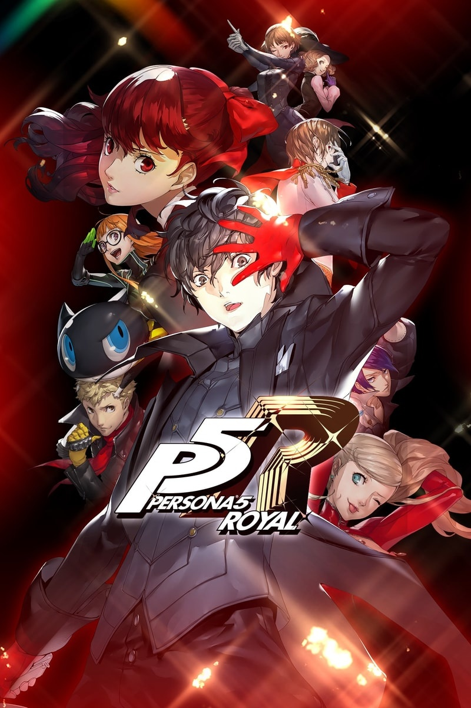

Persona 5 Royal inclui uma grande quantidade de conteúdo adicional que não está no jogo original, como dois novos confidentes, aperfeiçoamentos da jogabilidade e das masmorras, um capítulo final extra que conclui o semestre letivo do jogo original e até mesmo um novo Thieves Den, para expor recompensas e colecionáveis.
Os temas do jogo giram em torno de alcançar a liberdade das limitações da sociedade moderna, rebelião contra o sistema e forças superiores, enquanto sua história foi fortemente inspirada pela psicologia junguiana, ficção picaresca e seus Personas iniciais que foram baseados em torno do tema de foras-da-lei e rebeldes
Após um estranho incidente, os Ladrões-Fantasma entram em um mundo bizarro em que cidadãos vivem sob a opressão de um regime tirânico. Cercados por um grupo militar chamado Legionários, eles são resgatados de um grande perigo por Erina, uma misteriosa revolucionária que oferece uma oportunidade atraente em troca da ajuda deles. Qual é a verdade por trás de Erina e sua proposta aos Ladrões-Fantasma?